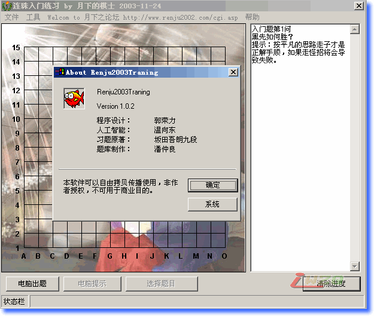

坂田吾朗三手胜全套习题(软件题库练习版)
首页
定式及研究
#1 坂田吾朗三手胜全套习题(软件题库练习版) 作者：有志青年 发表时间：2008-7-11 22:02:32

该软件好像是VB做的，各位下载之后先不要安装，试着直接运行“连珠教室.exe”文件，是一只小狗的图标。如果不行再安装。
点击下载
#2 Re:坂田吾朗三手胜全套习题(软件题库练习版) 作者：江南新绿 发表时间：2008-7-12 12:21:15
Author
#3 Re:坂田吾朗三手胜全套习题(软件题库练习版) 作者：棋谈人生 发表时间：2008-7-13 17:27:41
谢谢分享 辛苦了 正在学习
#4 Re:坂田吾朗三手胜全套习题(软件题库练习版) 作者：完美的瑕疵 发表时间：2008-8-23 18:35:07
应该是个不错的东西
感谢楼主分享
#5 Re:坂田吾朗三手胜全套习题(软件题库练习版) 作者：冷风浊月 发表时间：2008-12-31 13:47:00
感谢楼主分享・・・・・・・・・・・・
#6 Re:坂田吾朗三手胜全套习题(软件题库练习版) 作者：五星若连珠 发表时间：2009-1-2 22:30:10
好运气，直接运行“连珠教室.exe”文件就行了。。。
#7 Re:坂田吾朗三手胜全套习题(软件题库练习版) 作者：天线宝宝 发表时间：2009-1-6 12:29:58
谢谢分享 辛苦了
#8 Re:坂田吾朗三手胜全套习题(软件题库练习版) 作者：旖旎阳光 发表时间：2009-1-7 14:16:54
谢谢楼主贡献
#9 Re:坂田吾朗三手胜全套习题(软件题库练习版) 作者：问笑强 发表时间：2009-1-8 23:07:01
谢谢，一直在找这个东西，呵呵，太好了
#10 Re:坂田吾朗三手胜全套习题(软件题库练习版) 作者：旖旎阳光 发表时间：2009-1-9 17:39:15
这个软件好像有点问题，中级试题第25问黑能走三三禁手，望查证。
#11 Re:坂田吾朗三手胜全套习题(软件题库练习版) 作者：千羽鹤 发表时间：2009-2-28 23:39:00
哈哈哈，终于找到了
#12 Re:坂田吾朗三手胜全套习题(软件题库练习版) 作者：三一生 发表时间：2009-6-17 11:19:22
大力支持!楼主辛苦!顶!
#13 Re:坂田吾朗三手胜全套习题(软件题库练习版) 作者：三一生 发表时间：2009-6-17 17:04:29
谢谢楼主，贡献分享！
#14 Re:坂田吾朗三手胜全套习题(软件题库练习版) 作者：浪弹子 发表时间：2009-6-25 21:24:26
password 是什么
#15 Re:坂田吾朗三手胜全套习题(软件题库练习版) 作者：英雄九段 发表时间：2009-6-26 0:54:28
感谢楼主分享・・・・・・・・・・・・
#16 Re:坂田吾朗三手胜全套习题(软件题库练习版) 作者：鄙视妖刀开局 发表时间：2009-6-28 7:13:53
初级我都过不了。
#17 Re:坂田吾朗三手胜全套习题(软件题库练习版) 作者：wrwak 发表时间：2009-6-28 9:20:00
要求封杀楼上不雅ID
#18 Re:坂田吾朗三手胜全套习题(软件题库练习版) 作者：wrwak 发表时间：2009-6-28 9:20:50
要是这样都可以我马上就去注册，鄙视RIF 鄙视终结者
#19 Re:坂田吾朗三手胜全套习题(软件题库练习版) 作者：爱五子棋迷 发表时间：2009-6-28 10:11:41
谢了
#20 Re:坂田吾朗三手胜全套习题(软件题库练习版) 作者：太岁 发表时间：2009-10-12 20:17:08
password 是什么
#21 Re:坂田吾朗三手胜全套习题(软件题库练习版) 作者：通尼 发表时间：2009-10-19 14:51:15
好东西，不知道能用吗?
#22 Re:坂田吾朗三手胜全套习题(软件题库练习版) 作者：糊涂的 发表时间：2009-10-25 16:01:13
lz好人
#23 Re:坂田吾朗三手胜全套习题(软件题库练习版) 作者：夜冷彩殇 发表时间：2010-5-2 15:40:31
请问password是什么 哪位能说一下啊 是不是能看到正解图啊？
如果有password能看正解 那这个东西对我价值要大多了啊
#24 Re:坂田吾朗三手胜全套习题(软件题库练习版) 作者：有志青年 发表时间：2010-5-2 15:45:09
ShowPost.asp?ThreadID=2790
#25 Re:坂田吾朗三手胜全套习题(软件题库练习版) 作者：虎哥 发表时间：2010-5-2 21:26:42
这个很好，自己看着题做，往往看不到强防。用这个可以很好的检验答案的正确性。我强烈推荐。
#26 Re:坂田吾朗三手胜全套习题(软件题库练习版) 作者：蓝剑萧风 发表时间：2010-6-29 23:53:41
感谢楼主分享
#27 Re:坂田吾朗三手胜全套习题(软件题库练习版) 作者：五子米猫 发表时间：2010-9-27 7:40:26
呵呵 很不错！虽然有点bug
#28 Re:坂田吾朗三手胜全套习题(软件题库练习版) 作者：非黑既白 发表时间：2011-7-11 19:52:04
这个太好了，谢谢分享
#29 Re:坂田吾朗三手胜全套习题(软件题库练习版) 作者：非黑既白 发表时间：2011-7-11 20:03:10
试了几道高级题，非常好用。再次感谢！ （ 会不会简单了点 ）
还有，我不知道该怎样关闭它（ 点击‘附加题库’就找不到它了），只好开启‘任务管理器’结束进程。
［此帖子已被 非黑既白 在 2011-7-11 20:34:55 编辑过］